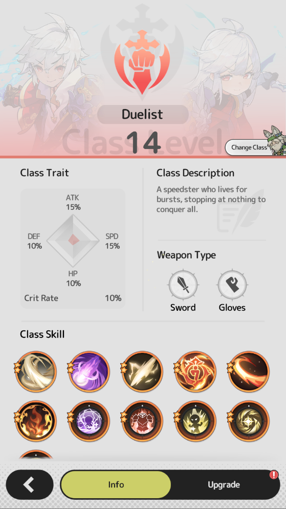
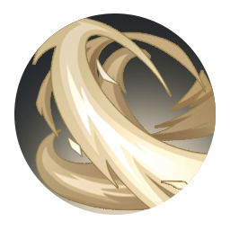
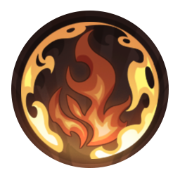
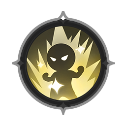
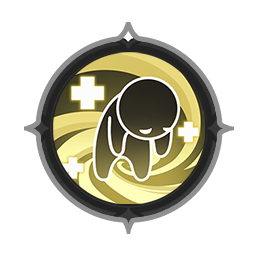

Đấu Sĩ (Duelist)
TỔNG QUAN
Một lớp nhân vật chiến đấu với cơn thịnh nộ của lốc xoáy — nhanh như chớp, xâm lấn như lửa, và là bậc thầy áp chế kẻ địch bằng sự hung hãn không ngừng nghỉ.
Họ tiên phong đột phá tuyến đầu, thống trị chiến trường bằng nhịp tấn công dữ dội, càng đánh giáp lá cà càng trở nên đáng gờm.
Đấu Sĩ (Duelist) giống như một con thú săn mồi trên chiến trường, không hề sợ hãi trước nỗi đau. Với khả năng hồi phục vượt trội, họ có thể nhanh chóng ổn định tình trạng trong những trận giao tranh khốc liệt. Ngay cả khi bị thương nặng, họ vẫn dựa vào ý chí bất khuất để tung đòn phản công liều lĩnh và giành chiến thắng từ tay thất bại.
Hãy tận hưởng cảm giác hồi hộp khi nhảy múa trên lưỡi kiếm, và nghiền nát hàng ngũ địch bằng một đợt tấn công áp đảo!

Kỹ Thuật Đấu Sĩ (Duelist)
| Biểu tượng | Tên | Loại | Mô tả | Hình ảnh |
|---|---|---|---|---|
 |
Sunset Sword | Sát Thương | Gây Sát Thương Vật Lý 5 lần lên tất cả kẻ địch trong khu vực 3x2 ô phía trước người thi triển. | |

|
Darkness Descends | Di Chuyển, Sát Thương, Giải Trừ | Nhảy tới bất kỳ ô trống nào trong phạm vi 5 ô quanh người thi triển. Gây Sát Thương Bóng Tối 1 lần lên 1 kẻ địch trong phạm vi 1 ô quanh người thi triển và giải trừ ngẫu nhiên 1 buff. (Ưu tiên mục tiêu lớn) | |

|
Flash Dash | Di Chuyển, Sát Thương | Lao thẳng 5 ô theo đường thẳng, gây Sát Thương Vật Lý Doom 1 lần lên tất cả kẻ địch trong khu vực 1x4 ô dọc đường đi. (Không thể xuyên qua kẻ địch lớn hơn 4 ô) | |

|
Shattering Sigil | Debuff | Tấn công 1 kẻ địch trong phạm vi 1 ô quanh người thi triển, gây Sát Thương Lửa 1 lần và gây Ấn (Sigil). (Ưu tiên mục tiêu lớn) | |

|
Fire Slash | Sát Thương | Gây Sát Thương Lửa Doom 1 lần lên tất cả kẻ địch trong khu vực 3x2 ô phía trước người thi triển. | |
 |
Flame Aura | Đồng Minh, Buff, Sát Thương | Ban Lửa (Flame) cho người thi triển và 3 đồng minh ngẫu nhiên trong phạm vi 3 ô quanh người thi triển trong 2 lượt. Hiệu ứng này không thể bị giải trừ. |
Bùa Đấu Sĩ (Duelist)
| Biểu tượng | Tên | Loại | Mô tả | Hình ảnh |
|---|---|---|---|---|

|
Indomitable Will | Buff, Hồi Máu | Khi lần đầu tiên nhận sát thương chí mạng, sống sót với 1 HP, tiến vào trạng thái Bất Khuất (Indomitable) trong 2 lượt (không thể bị giải trừ), và hồi máu cho người thi triển 1 lần. | |

|
Frame of Battles | Buff | Giảm sát thương người thi triển phải chịu với mỗi 15% HP đã mất. Hiệu ứng này cộng dồn tối đa 5 lần và không thể bị giải trừ. | |
 |
Blazing Clash | Buff | Tăng sát thương người thi triển gây ra với mỗi 4 Kỹ Thuật đã dùng. Cộng dồn tối đa 3 lần. | |
| Crit Mastery | Chỉ Số | Tăng Sát Thương Chí Mạng của người thi triển. | ||
 |
Potential Vitality | Buff | Tăng lượng hồi máu người thi triển nhận được với mỗi 15% HP đã mất. Hiệu ứng này cộng dồn tối đa 5 lần và không thể bị giải trừ. |